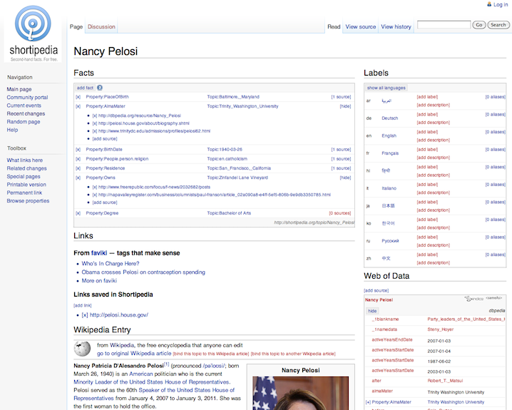

|
|

|
| No talk, just facts ... | |
Description
Shortipedia aims to show that: 1) it is possible to collect encyclopedic-style structured knowledge in the form of object-property-value triples that can be aggregated to answer structured queries, 2) volunteer contributors can validate many such triples that already exist in the Web published by a variety of sources, 3) alternative claims can co-exist and are annotated with their provenance.
Shortipedia builds on the widely used Semantic MediaWiki framework, which supports the entry of structured facts about the topic of any given page. Semantic MediaWiki is used daily in hundreds of installations where end users successfully create structured content in areas as diverse as science, teen card trading, and international law. A theme throughout is the focus on organizing facts as RDF assertions and leaving other more complex knowledge as text in the wiki.
Shortipedia can import facts from the Linked Open Data (LOD) cloud, shown in the bottom right, a community-built resource with more than 25B interlinked triples that come from more than 200 sources. As would be expected of any repository that includes information from diverse sources, many of which have been created using automated information extraction tools, the LOD information has varying quality, is incomplete, redundant, often inconsistent, and many times impossible to comprehend. It is ripe for human contributors to edit and extend its contents, effectively demonstrating how automated extraction and manual review can complement one another in creating structured content.
In Shortipedia, contributors find a wiki-style interface where each object has a page (called a "topic" in wikis). The screenshot below shows a page for Nancy Pelosi, they can enter properties of that object (e.g., residence) and their values (e.g., San Francisco) as other topic pages, and substantiate any such assertion with sources of evidence. Web of Data sources are shown to contributors as possible sources. In this example, the alma mater came from DBpedia and the religion from Freebase. For a structured query such as "What US representatives own a business?" there is already a claim about Pelosi owning a vineyard. By further describing the entry for this vineyard and categorizing it as a business, that question could be answered.
